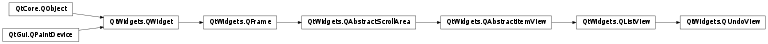
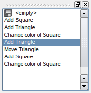

QUndoView¶
Synopsis¶
Functions¶
- def
cleanIcon() - def
emptyLabel() - def
group() - def
setCleanIcon(icon) - def
setEmptyLabel(label) - def
stack()
Detailed Description¶
The
PySide2.QtWidgets.QUndoViewclass displays the contents of aPySide2.QtWidgets.QUndoStack.
PySide2.QtWidgets.QUndoViewis aPySide2.QtWidgets.QListViewwhich displays the list of commands pushed on an undo stack. The most recently executed command is always selected. Selecting a different command results in a call toQUndoStack.setIndex(), rolling the state of the document backwards or forward to the new command.The stack can be set explicitly with
PySide2.QtWidgets.QUndoView.setStack(). Alternatively, aPySide2.QtWidgets.QUndoGroupobject can be set withPySide2.QtWidgets.QUndoView.setGroup(). The view will then update itself automatically whenever the active stack of the group changes.
-
class
PySide2.QtWidgets.QUndoView(group[, parent=nullptr])¶ -
class
PySide2.QtWidgets.QUndoView(stack[, parent=nullptr]) -
class
PySide2.QtWidgets.QUndoView([parent=nullptr]) Parameters: - group –
PySide2.QtWidgets.QUndoGroup - stack –
PySide2.QtWidgets.QUndoStack - parent –
PySide2.QtWidgets.QWidget
Constructs a new view with parent
parentand sets the observed group togroup.The view will update itself autmiatically whenever the active stack of the group changes.
Constructs a new view with parent
parentand sets the observed stack tostack.Constructs a new view with parent
parent.- group –
-
PySide2.QtWidgets.QUndoView.cleanIcon()¶ Return type: PySide2.QtGui.QIcon
-
PySide2.QtWidgets.QUndoView.emptyLabel()¶ Return type: unicode
-
PySide2.QtWidgets.QUndoView.group()¶ Return type: PySide2.QtWidgets.QUndoGroupReturns the group displayed by this view.
If the view is not looking at group, this function returns 0.
-
PySide2.QtWidgets.QUndoView.setCleanIcon(icon)¶ Parameters: icon – PySide2.QtGui.QIcon
-
PySide2.QtWidgets.QUndoView.setEmptyLabel(label)¶ Parameters: label – unicode
-
PySide2.QtWidgets.QUndoView.setGroup(group)¶ Parameters: group – PySide2.QtWidgets.QUndoGroupSets the group displayed by this view to
group. Ifgroupis 0, the view will be empty.The view will update itself autmiatically whenever the active stack of the group changes.
-
PySide2.QtWidgets.QUndoView.setStack(stack)¶ Parameters: stack – PySide2.QtWidgets.QUndoStackSets the stack displayed by this view to
stack. Ifstackis 0, the view will be empty.If the view was previously looking at a
PySide2.QtWidgets.QUndoGroup, the group is set to 0.
-
PySide2.QtWidgets.QUndoView.stack()¶ Return type: PySide2.QtWidgets.QUndoStackReturns the stack currently displayed by this view. If the view is looking at a
PySide2.QtWidgets.QUndoGroup, this the group’s active stack.
© 2018 The Qt Company Ltd. Documentation contributions included herein are the copyrights of their respective owners. The documentation provided herein is licensed under the terms of the GNU Free Documentation License version 1.3 as published by the Free Software Foundation. Qt and respective logos are trademarks of The Qt Company Ltd. in Finland and/or other countries worldwide. All other trademarks are property of their respective owners.